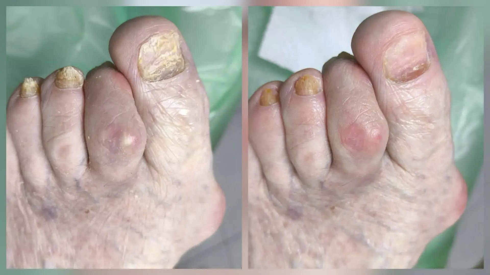
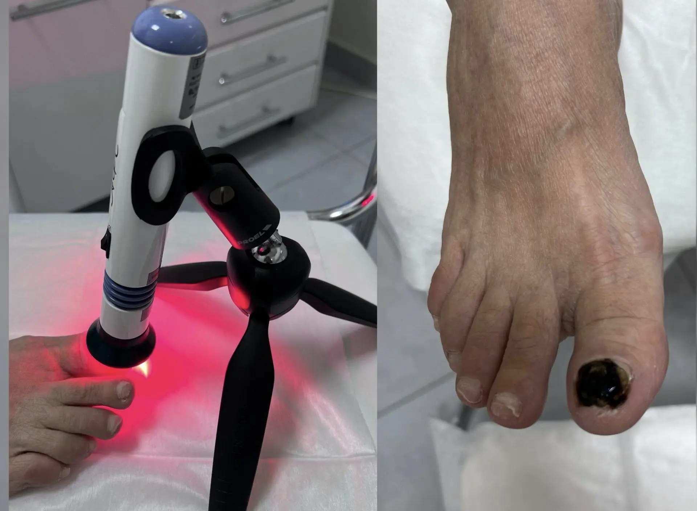

Обработка грибкового поражения ногтей
Профессиональная обработка ногтей на ногах при грибковом поражении включает очищение ногтевой пластины и подготовку ногтя к дальнейшему уходу. Процедура проходит бережно и аккуратно.
Этапы проведения процедуры
- Осмотр и знакомство с задачей. Специалист - подолог оценивает цвет, толщину и структуру ногтевой пластины, а также уточняет пожелания клиента.
- Подготовка к обработке. Выполняется антисептическая обработка кожи стоп и инструментов для предотвращения распространения инфекции.
- Аппаратная обработка. С помощью специального аппарата и стерильных фрез удаляются поражённые, утолщённые и ороговевшие участки ногтевой пластины. Процедура проходит безболезненно и максимально бережно.
- Нанесение профессиональных средств. После обработки специалист наносит подходящее средство в соответствии с задачей процедуры.
- Контрольные визиты. При последующих посещениях подолог оценивает изменения ногтевой пластины и при необходимости уточняет рекомендации.
- Домашний уход. Клиент получает рекомендации по уходу за стопами, обработке обуви и поддержанию гигиены.
Преимущество процедуры
- Безопасность и стерильность. При работе с грибковой инфекцией подолог строго соблюдает правила стерильности: использует одноразовые или стерилизованные инструменты, чтобы не допустить распространения инфекции.
- Минимум риск «грибковой пыли». Используются современные аппараты со встроенной вытяжкой или спреем, а специалист работает в маске.
- Комплексный подход. Подолог не только проводит обработку, но и даёт рекомендации по гигиене стоп, обработке обуви и носков, что критически важно для профилактики рецидивов.
Аппарат АФС-Подолог
Фотодинамическая терапия (ФДТ) в красной области спектра (630–670 нм) аппаратом АФС-Подолог может использоваться как дополнительная процедура в программе ухода за ногтями и кожей.
Как работает аппарат
- Нанесение геля. На очищенную и подготовленную поверхность ногтя или кожи наносят гель-фотосенсибилизатор. Он обладает свойством избирательно накапливаться в патологически изменённых клетках — грибковых, бактериальных или гиперкератотических.
- Экспозиция. Гель оставляют на 10 минут для глубокого проникновения в ткани.
- Световое воздействие. Обработанный участок облучают светом с длиной волны 660 нм (красный спектр) от светодиодов аппарата. Под действием света фотосенсибилизатор активируется и начинает вырабатывать синглетный кислород — мощный окислитель, который разрушает мембраны патологических клеток. При этом здоровые ткани не повреждаются.
Преимущества метода
- Безболезненность. Процедура не требует анестезии и не вызывает дискомфорта.
- Безопасность. Селективное воздействие: гель накапливается только в поражённых клетках, здоровые ткани не страдают.
- Стимуляция регенерации. Метод не только уничтожает патогены, но и активизирует естественные процессы заживления и восстановления тканей.
- Возможность избежать системных препаратов. Для пациентов с противопоказаниями к приёму таблеток (например, при заболеваниях печени или почек) ФДТ может стать альтернативой.
Основные показания
- Онихомикоз (грибок ногтей).
- Подошвенные и околоногтевые бородавки.
- Гиперкератоз.
- Воспалительные процессы.
- Профилактика рецидивов грибковых инфекций.
- Обработка ногтевого ложа после удаления ногтевой пластины для полной санации.
Часто задаваемые вопросы
Сколько времени занимает восстановление?
Восстановление занимает от нескольких месяцев до года — всё зависит от степени поражения ногтя.
Почему грибок возвращается?
Основные причины возвращения грибка — тесная обувь, влажная среда, отсутствие правильной и регулярной обработки ногтей и профилактики. При правильном подходе можно добиться устойчивого результата и контролировать состояние ногтей.
Зачем нужна фототерапия при изменениях ногтей?
Фототерапия может использоваться как дополнительная процедура в рамках ухода за ногтевой пластиной. Возможность её проведения и формат процедуры специалист обсуждает с клиентом индивидуально.
Регулярные визиты к подологу помогают поддерживать ухоженное состояние стоп и вовремя обращать внимание на новые изменения.
Примеры работ
Нажмите «Показать», чтобы посмотреть фотографии полностью.


Запишитесь на приём
Оставьте заявку — мы свяжемся с вами и подберём удобное время.